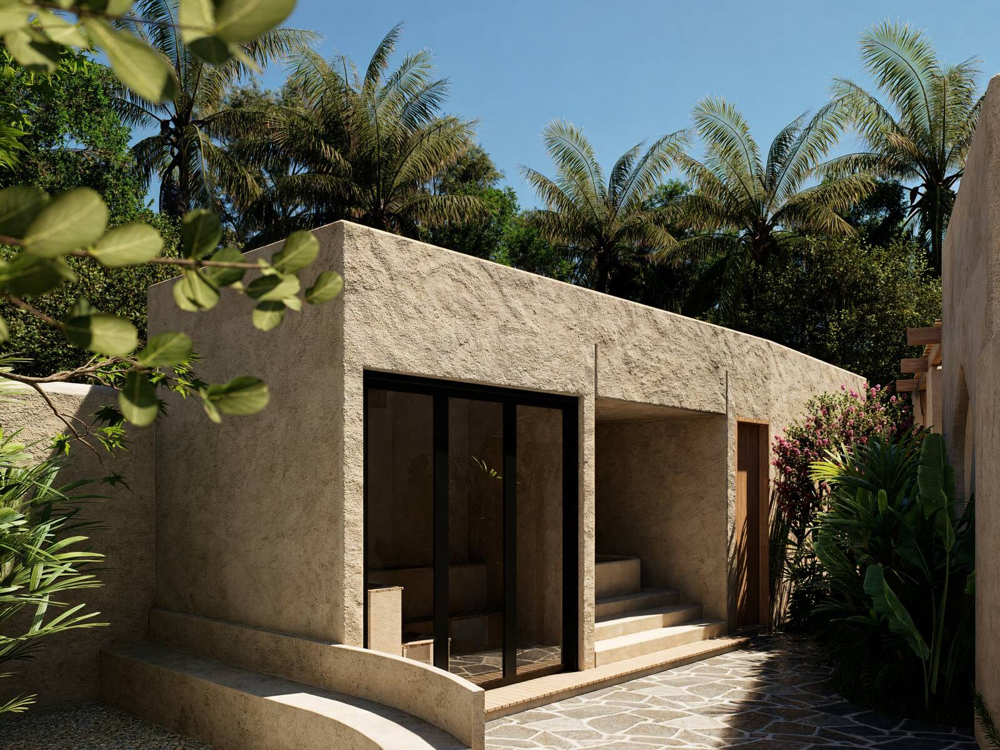

Casa Brava Boutique Hotel
The origin
A luxury complex in southern Lombok
Kuta Mandalika - Lombok
casabrava-lombok.com - @casabrava.lombok
Designed for intimacy. Drawn for silence.
Just nine private villas and six suites, each with its own horizon. Curved stone walls, solid timber and light that enters unhurried: architecture that blends into the landscape instead of imposing on it.
Discover moreA ritual for every hour of the day
Mornings of movement, afternoons of still water, nights with the table set until late: every moment of the day has its own ritual at Casa Brava.
Discover moreA pause
Stillness is the rarest privilege.
Book your experience

Casa Brava
"Where tranquillity finds its place"
Hidden in the tropical landscape of southern Lombok, Casa Brava offers complete privacy just minutes from the beaches, cafés and coastal rhythm of Mandalika. A place made to reconnect with nature without being far from anything.
Beaches and surf
"Turquoise waters, endless horizons"
Steps from Casa Brava: the white sand of Tanjung Aan, the relaxed vibe of Kuta Beach and the world-class waves of Gerupuk — every stretch of coast shows a different face of Lombok.
Kuta town centre
"The living heart of the island"
Just minutes away, Kuta invites you to explore its café culture, carefully curated boutiques and a food scene that blends local and international flavours.